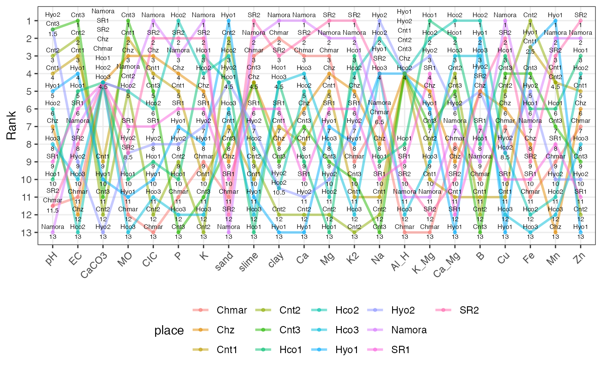

Create a slopegraph or bump chart from a data frame of ranks.
rankslopegraph(
df,
names,
group,
force.grouping = TRUE,
line.size = 1,
line.alpha = 0.5,
line.col = NULL,
point.size = 1,
point.alpha = 0.5,
point.col = NULL,
text.size = 2,
legend.position = "bottom"
)A data frame of records.
The name of the column having the names of the records.
Optional. The name of the column with a grouping variable.
If TRUE, the column specified in the argument
names will be considered as a grouping variable for plotting the
slopegraphs. (Each record will be represented by a different colour).
Default is TRUE.
Size of lines plotted. Must be numeric.
Transparency of lines plotted. Must be numeric.
Default is TRUE. Overrides colouring by
force.grouping argument.
Size of points plotted. Must be numeric.
Transparency of points plotted. Must be numeric.
Default is TRUE. Overrides colouring by
force.grouping argument.
Size of text annotations plotted. Must be numeric.
Position of the legend in the plot.
The slopegraph as a ggplot2 grob.
Tufte ER (1986). The Visual Display of Quantitative Information. Graphics Press, Cheshire, CT, USA. ISBN 0-9613921-0-X.
library(agricolae)
data(soil)
dec <- c("pH", "EC")
inc <- c("CaCO3", "MO", "CIC", "P", "K", "sand",
"slime", "clay", "Ca", "Mg", "K2", "Na", "Al_H", "K_Mg", "Ca_Mg",
"B", "Cu", "Fe", "Mn", "Zn")
soilrank <- rankdf(soil, increasing = inc, decreasing = dec)
soilrank
#> place pH EC CaCO3 MO CIC P K sand slime clay Ca Mg K2 Na Al_H K_Mg
#> 1 Namora 13.0 7 4.5 5.0 1 3 1 13.0 2.0 1.0 1 2 2 6.5 11 11
#> 2 Hyo1 5.0 4 10.0 11.0 10 7 8 1.0 11.0 13.0 13 7 8 4.0 4 6
#> 3 Hyo2 1.5 9 13.0 8.5 8 8 7 4.5 7.0 10.5 11 10 7 1.0 4 3
#> 4 SR1 9.0 6 4.5 7.0 7 6 6 10.0 6.0 6.0 10 6 6 10.0 9 4
#> 5 SR2 11.5 8 4.5 8.5 2 2 2 12.0 1.0 3.0 2 1 1 4.0 10 12
#> 6 Cnt1 4.0 3 9.0 2.0 4 5 10 7.0 10.0 7.0 8 5 11 11.0 4 10
#> 7 Cnt2 3.0 2 12.0 5.0 12 9 13 2.0 9.0 12.0 12 12 13 12.0 4 8
#> 8 Cnt3 1.5 1 11.0 1.0 5 13 11 8.0 4.5 9.0 7 9 10 13.0 4 7
#> 9 Chz 7.0 12 4.5 3.0 3 4 5 9.0 4.5 8.0 6 4 5 8.0 4 5
#> 10 Chmar 11.5 11 4.5 12.0 13 11 9 11.0 3.0 2.0 3 3 9 6.5 13 13
#> 11 Hco1 10.0 5 4.5 10.0 9 10 3 4.5 13.0 4.5 9 13 3 9.0 8 1
#> 12 Hco2 6.0 13 4.5 5.0 6 1 4 3.0 8.0 10.5 5 11 4 2.0 4 2
#> 13 Hco3 8.0 10 4.5 13.0 11 12 12 6.0 12.0 4.5 4 8 12 4.0 12 9
#> Ca_Mg B Cu Fe Mn Zn
#> 1 7 9 1.0 7.0 2.0 2
#> 2 13 2 13.0 2.5 1.0 13
#> 3 6 5 8.5 5.0 10.0 10
#> 4 12 7 10.0 10.0 8.0 11
#> 5 10 5 2.0 9.0 3.0 1
#> 6 11 11 11.0 2.5 4.5 5
#> 7 4 12 5.0 1.0 4.5 12
#> 8 5 13 4.0 4.0 7.0 9
#> 9 9 5 6.0 8.0 13.0 6
#> 10 8 10 7.0 11.0 9.0 7
#> 11 2 8 3.0 6.0 6.0 3
#> 12 1 1 8.5 12.0 11.0 4
#> 13 3 3 12.0 13.0 12.0 8
soilslopeg <- rankslopegraph(soilrank, names = "place")
soilslopeg
